V17.1 plot gallery
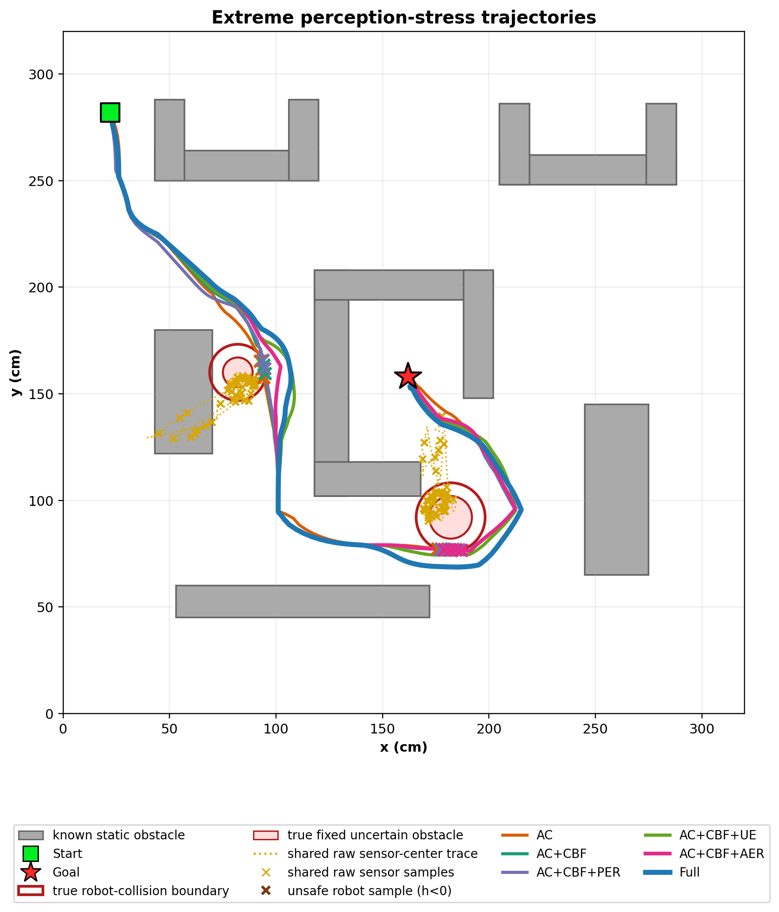
fig01_full_trajectory_comparison
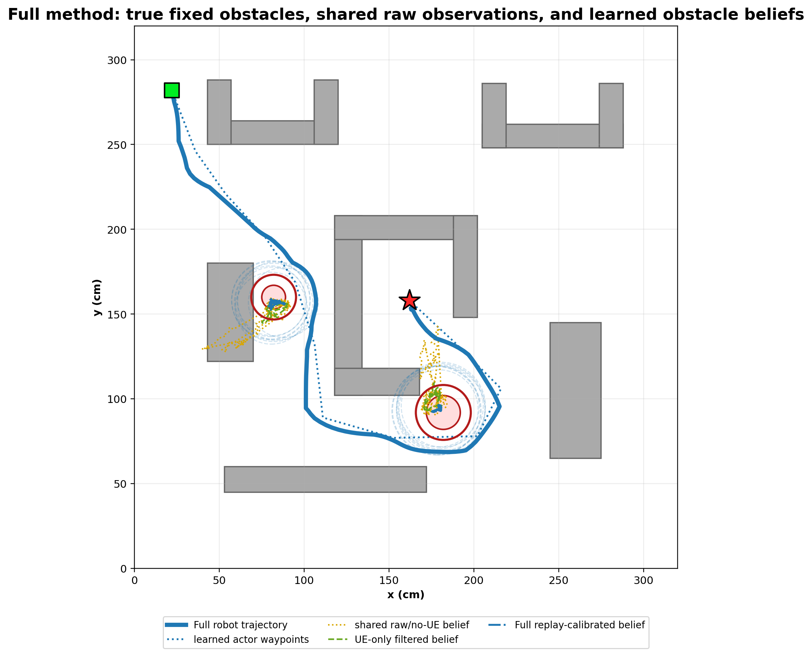
fig02_full_method_trajectory
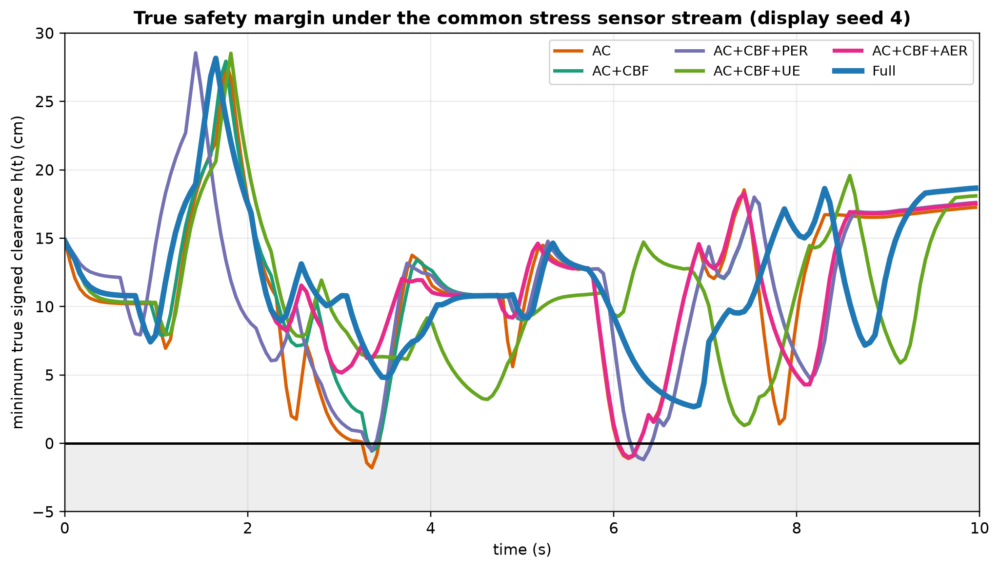
fig03_safety_margin_over_time
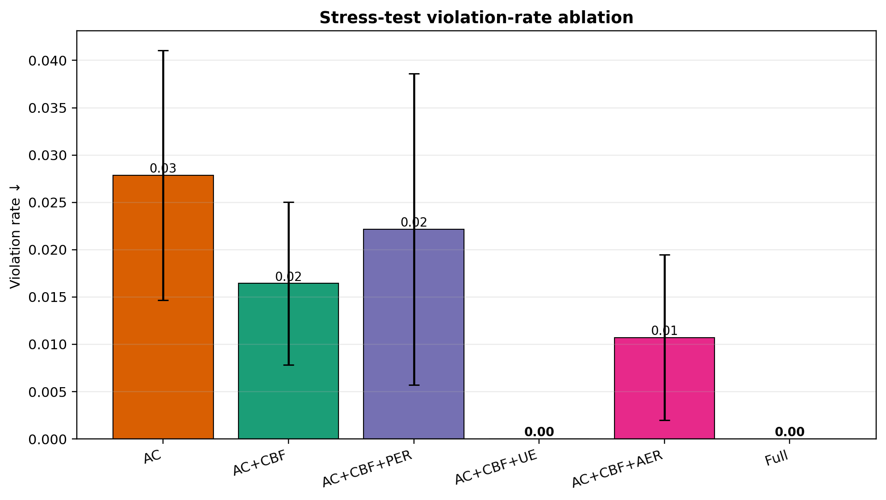
fig04_stress_violation_ablation
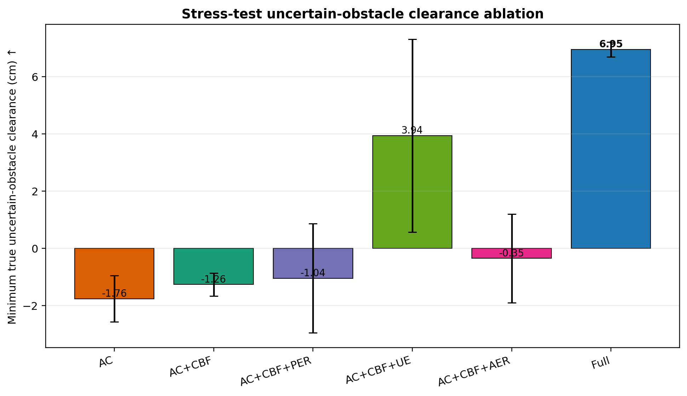
fig05_stress_min_clearance_ablation
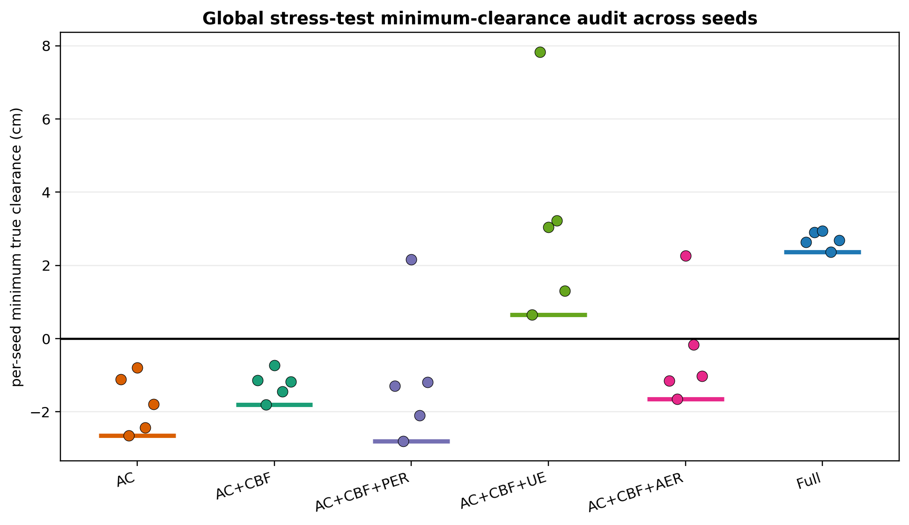
fig05b_global_min_clearance_audit
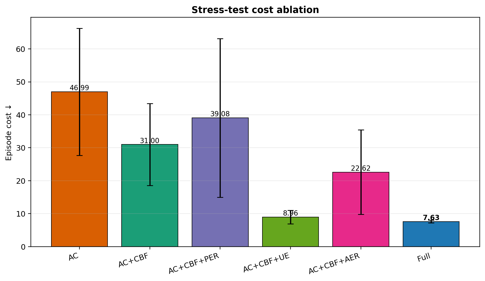
fig06_stress_cost_ablation
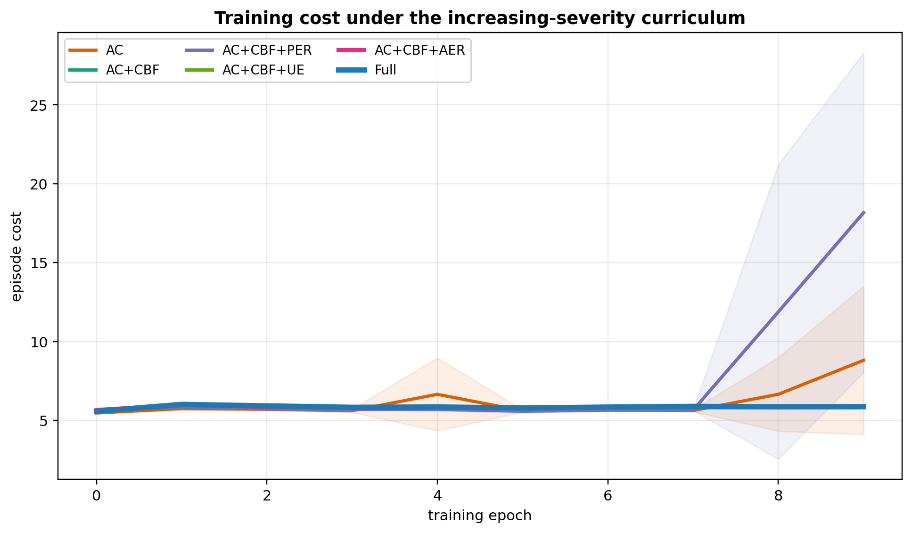
fig07_learning_curve_cost
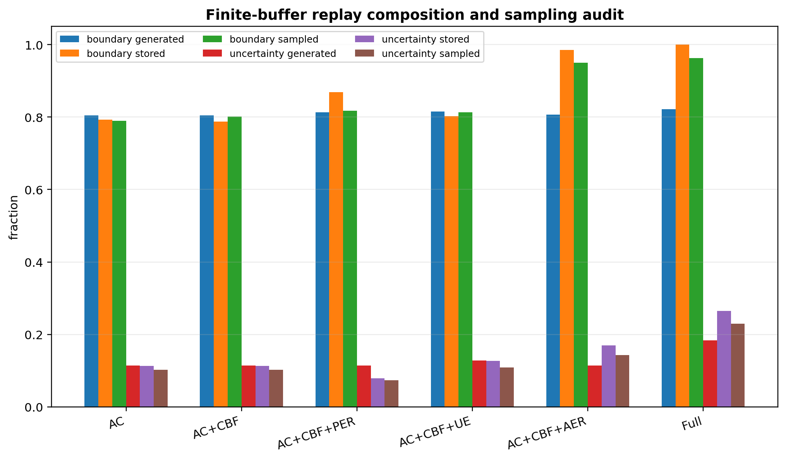
fig08_replay_finite_buffer_audit
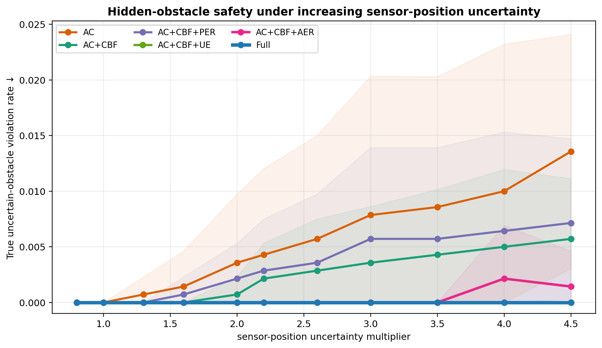
fig09_robustness_sweep_violation
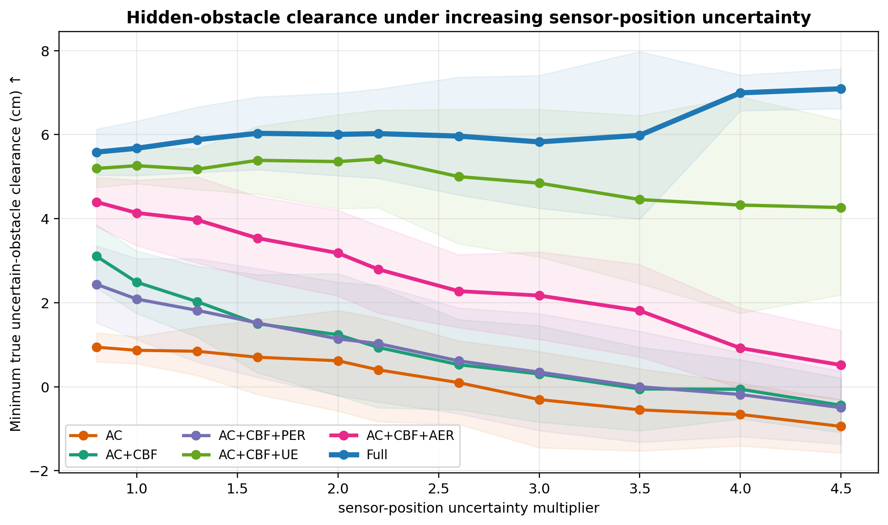
fig10_robustness_sweep_clearance
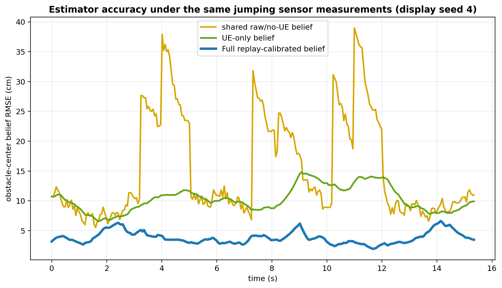
fig11_obstacle_belief_rmse_over_time
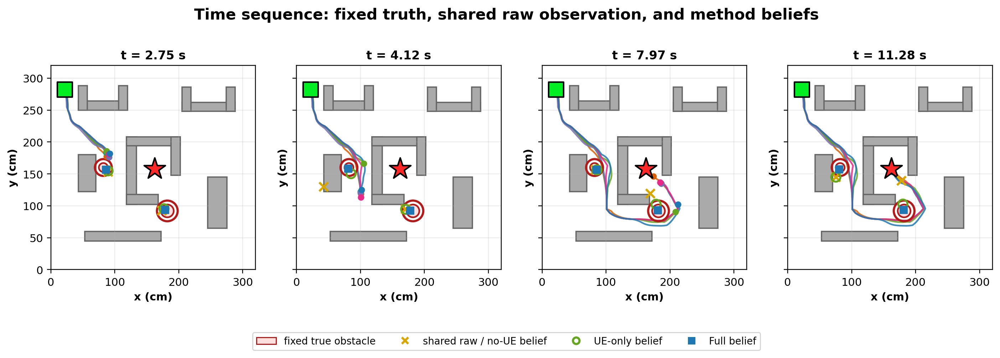
fig12_time_sequence_panels
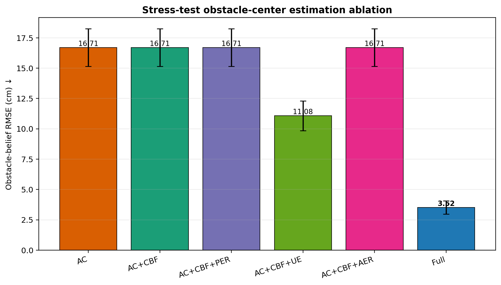
fig13_belief_rmse_ablation